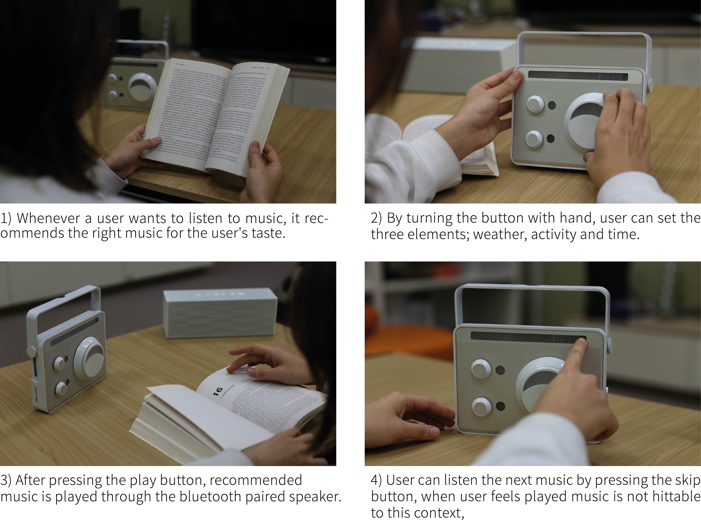

Music Station
2016 Fall [Creative Design class, UNIST DHE]
Music is an intrinsic part of our everyday lives. Listening to music is intensely personal, entirely social, and almost always contextual. I want to make a product that provides personalized music by analyzing patterns of users' taste and situation beyond the function of recommending music in a one-dimensional classification such as listening music on a rainy day and listening to music. The purpose of this project is to create a music recommendation product that understands my music taste and music play pattern better than me.
- ‘What if I have a product that does deep learning my listening pattern and recommends music that matches my situation?’

'Music Station' is a music player that enables its owner to listen to music by setting up a specific situation such as time, weather, and activities.
How it works
'Music Station' learns playing pattern of listener by it self and recommends musics at a given context. It gets music from database (wifi-linked) and transmits it through the speaker (bluetooth-linked). 'Music station' has a role that receive input data of listener and analyze music taste of user.
Scenario
Usuage Examples
Button Types
Video
Design Show UNIST 2016 Exhibition
- Design Show UNIST 2016
- Date: Dec.15.2016(Thu) - Dec.20.2017(Tue), 10:00 ~ 18:00
- Place: Engineering Building 2, UNIST Design Studio
Design Korea 2017 Exhibition
- Design Korea 2017
- Date: Nov.08.2017(Wed) - Nov.12.2017(Sun), 10:00 ~ 18:00
- Place: KINTEX Exhibition Center1 4-5 Hall